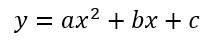
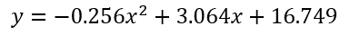
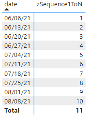
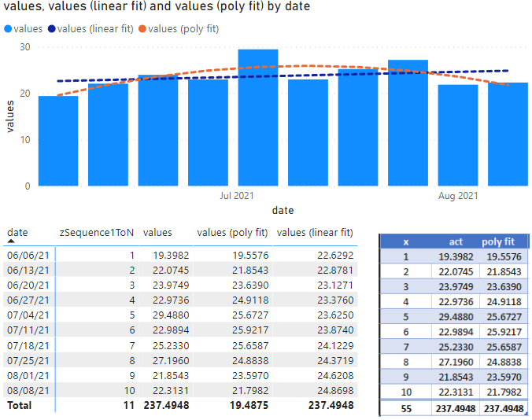
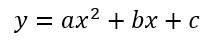
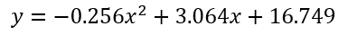
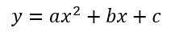
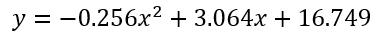

If you're here looking to build some polynomial regression curves for some data, I'm sure I do not need to explain why they can be helpful when analyzing your data. I found myself replicate some excel charts with a polynomial trend line in a Power BI (PBI) report. As demonstarted in the Excel chart to the right, each of these regression lines told different stories about what was happening about the data in question.
As anyone developing PBI reports for a company will surely know, building the reports is a rather useless task if people don't use them - and even more so if the exact same analysis is being performed in Excel. This screenshot (a screenshot of a PowerPoint presentation from a Teams meeting), is one such example. The report I created to show this data did not have the any kind of useful trend lines on this chart, so Excel (naturally) came to the rescue.
By default, Power BI does include the capability to add a trend line to your data, which definitely is handy. However, the customization is quite limited meaning there are quite a few drawbacks with using the built in lines. You're out of luck if:
You have more than one series in the chart but you only want one series to have a trend line, or
You want to use any other kind of regression other than linear (higher order, exponential, logarithmic, etc.)
The full measure is posted below. If you would like to follow along, I have attached the Excel and Power BI files I used to develop the process and test out the data. Feel free to use them as you like.
The measures below rely on a calendar/date table named _Calendar13Month. The date field in that table we are aggregating against is End Of Week. [values] is a measure of the field we are aggregating against. If this field is not already a measure, turn it into a measure by just wrapping it in a SUM function (or a different aggregation as appropriate), like: values (as a measure) = SUM(Tablename[Fieldname]).
zSequence1ToN = RANKX(ALLSELECTED(_Calendar13Month[End of Week]),CALCULATE(MAX(_Calendar13Month[End of Week])),,ASC)
Value (poly fit) =
// Reference: https://www.thedatascientists.com/polynomial-regression/
// https://metric.ma.ic.ac.uk/metric_public/matrices/inverses/inverses2.html
// https://noah-severyn.github.io/polynomial-regression-for-powerbi.html
// Because our Xs (dates) and Ys (measures) are in different tables, we have to temporarily create a new table (Known) with both of those values so we can perform SUMX operations easily.
// To get the same polynomial fit as excel, the x values in the calculation are masked over with 1 thru n. Thus x-values in the calc are n+1-min(n)
var countItems = COUNTROWS(ALLSELECTED(_Calendar13Month[End of Week]))
var Known =
SELECTCOLUMNS (
ALLSELECTED(_Calendar13Month[End of Week]),
"KnownX", [zSequence1ToN],
"KnownY", [values]
)
var sumOfXs = SUMX(Known, [KnownX])
var sumOfYs = SUMX(Known, [KnownY])
var sumOfX2 = SUMX(Known, [KnownX] ^ 2)
var sumOfX3 = SUMX(Known, [KnownX] ^ 3)
var sumOfX4 = SUMX(Known, [KnownX] ^ 4)
var sumOfXY = SUMX(Known, [KnownX] * [KnownY])
var sumOfX2Y = SUMX(Known, [KnownX] ^ 2 * [KnownY])
var determinant = countItems*((sumOfX2*sumOfX4)-(sumOfX3*sumOfX3))-sumOfXs*((sumOfXs*sumOfX4)-(sumOfX2*sumOfX3))+sumOfX2*((sumOfXs*sumOfX3)-(sumOfX2*sumOfX2))
//Calculate the inverse matrix (combining a few steps together)
var M11 = ((sumOfX2*sumOfX4)-(sumOfX3*sumOfX3))/determinant
var M12 = -((sumOfXs*sumOfX4)-(sumOfX3*sumOfX2))/determinant
var M13 = -((sumOfX2*sumOfX2)-(sumOfXs*sumOfX3))/determinant //there was an error on this line i had to add a negative to fix. no idea why. EVERY other var evaluates correctly.
var M21 = -((sumOfXs*sumOfX4)-(sumOfX2*sumOfX3))/determinant
var M22 = ((countItems*sumOfX4)-(sumOfX2*sumOfX2))/determinant
var M23 = -((countItems*sumOfX3)-(sumOfXs*sumOfX2))/determinant
var M31 = ((sumOfXs*sumOfX3)-(sumOfX2*sumOfX2))/determinant
var M32 = -((countItems*sumOfX3)-(sumOfX2*sumOfXs))/determinant
var M33 = ((countItems*sumOfX2)-(sumOfXs*sumOfXs))/determinant
//Assuming equation of: a*x^2 + b*x + c
var c = M11*sumOfYs+M12*sumOfXY+M13*sumOfX2Y
var b = M21*sumOfYs+M22*sumOfXY+M23*sumOfX2Y
var a = M31*sumOfYs+M32*sumOfXY+M33*sumOfX2Y
RETURN
a*[zSequence1ToN]^2+b*[zSequence1ToN]+c
Building straight curves
I knew I was going to have to do a bit of work to find a solution that worked for my needs. The first step was to see if there was anything floating out there that someone else had started that I could piggy back off of. After some quick research, I found an example courtesy of XXL BI that works quite nicely for calculating a simple linear regression. Conveniently, I found later on that this also provides us with a great template to use when building up our higher order regression. That article also confirms that creating a measure to calculate our trend lines is the way to go opposed to the automatic ones provided by PBI:
There are at least two reasons to consider calculated trend lines:
With the built-in trend line, you can only infer its values from the Y axis, while the calculated trend line allows you to see the values explicitly [through a tooltip, for example]
As of September 2017, Power BI allows you to only add trend lines for numeric or datetime axes. As soon as you use strings (month names, for instance), you lose the ability to add trend lines. With simple linear regression, you can calculate them yourself, as long as you have sequential numeric values to use as known X values
We'll keep this code handy until we're ready to actualy start building the measure in Power BI. Before that however, we need to figure out how to adapt it so we can calculate the trend line we actually need: a second order (or higher order) polynomial.
Building curvy curves (specifically 2nd order curves)
Beyond some additional linear regression examples, no examples appeared for any other kind of regression. That means we'll have to go back to basics and do it the old fashioned way: ourselves.
Having been years since I had last attempted to do any kind of math at this level, my plan (was at the time and also as is laid out through the rest of this post) is as follows:
Determine what mathematical steps need to be taken to get the correct result.
Map everything to a few different variables I could combine together to simplify the process. There's no need to derrive everything from scratch every time.
Figure out how to port the math over to PBI and make it work.
Regarding the mathematical process, I'll use the process outlined here, which I found particularly helpful in explaining everything clearly and mostly all in one place with some examples. No matter what polynomial you want to model, the fundamental process is the same, but the math gets more complex the more orders you want to use. From that link:
"We wish to find a polynomial function that gives the best fit to a sample of data. We will consider polynomials of degree n, where n is in the range of 1 to 5. In other words we will develop techniques that fit linear, quadratic, cubic, quartic and quintic regressions. In fact, this technique will work for any order polynomial."
This means we're looking to build a polynomial of degree n=2. To start with, let's use some sample data I borrowed from my project:
Date
Value
6/6/2021
19.39817
6/13/2021
22.07447
6/20/2021
23.97487
6/27/2021
22.97359
7/4/2021
29.48796
7/11/2021
22.98940
7/18/2021
25.23303
7/25/2021
27.19599
8/1/2021
21.85426
8/8/2021
22.31307
Future me interjecting here on behalf of current you - this next step will save you a lot of time validating and troubleshooting results.
After making my way most of the way through this process getting regression equations that continually differed from the ones Excel was returning on the chart, I played around with the data and tried it on a variety of chart types. After a bit, I figured out the reason why my regression calculations were differing from the equation automatically calculated for the chart. As it turns out, Excel "masks" all of the x values with numbers from 1 to n .
Try it out. In excel, replace the x values with a sequence 1..n and you will notice that the regression equation does not change, despite the x values being a key component in those calculations.
The difference happens when plotting the values on any kind of line graph/bar graph, etc., as opposed to a scatter plot. In line and bar charts there is one independent variable and one dependent variable. There are two independent variables in a scatter plot, meaning it "matters" exactly what the x values are. You can replace the values in a bar/line graph with values spaced apart the same distance relatively, and you'd get the same result. Essentially, you are changing the numerical values of the x axis, so the values of 6/6/21 (aka 44353) to 6/13/21 (aka 44360) is masked with 1 to 2, respectively. While the numbers themselves did change, the relative spacing between each data point did not. This is the important characteristic for these charts.
Additionally, its much less computationally quicker easier to cube a number like 10 (10^3 = 10000) than it is to cube a date like 8/16/21 (44424^3 = 8.67704E+13). With such large numbers, we could potentially run into uncaptured rounding or truncation issues, especially in Excel. Multiplying smaller numbers means easier and quicker calculations, something to consider if you will apply this to thousands or hundreds of thousands or millions of data points.
End of helpful interjection. You may proceed with the regularly scheduled explanation.
The first thing we need to to is build up the matrix to start performing the required operations on it. I figured out the best way is to start defining each element of the matrix individually to start, and then assemble the matrix from these basic measures later on. I'll call these base, or summary measures. They're all pretty straight forward so far, just multiplying x and y values together in different ways.
Note: for display purposes, all values are truncated to two decimal points, not rounded.
With all of those measures computed, we can assemble our matrix M. From a mathematical perspective, this is skipping quite a few steps (as detailed in the first few sections of the The Data Scientists article), but there's really no reason to model those, as this is a convenient starting point to use anyways.
We need to find the inverse of this matrix. I found an explanation that I like to help find the inverse of a 3x3 matrix, which we ultimately need to do to compute the regression equation. The first step to finding the inverse of the matrix we built in the previous step involves computing the minor of the matrix. For each row and column, block out the current row and current column and take the determinant of the remaining 2x2 matrix. The result looks like the Minor matrix below.
Next, negate the value of alternating positions; this is called the cofactor matrix.
Next, simply transpose the matrix - switch all the rows to columns and the columns to rows. Because of the way our matrix is set up and which values are in which position, this likely will not look any different than before.
As a precursor for step 4, we'll need to find the determinant of our original 3x3 matrix. This is straightforward for a 2x2 matrix, but more complex for 3x3. Basically, for each column in the 3x3, we need to compute the determinant of the 2x2 matrix not including that column, and then add them together.
For the final step in finding the inverse, divide the transposed matrix by the determinant. This is our inverse of M, or .
We are now very close to the end of the process. Build up the y^ matrix with using three of the basic summary measurements from the first step.
Lastly, multiply M'M-1 and M'y^ together to find our coefficients for the regression equation, c, b, and a.


A quick check to verify that these are correct (at least according to how excel calculates them) shows that we're ok.
Porting to Power BI
With the calculations complete and seemingly correct, we can now worry about figuring out how to move that logic into a PBI measure. Start with the same template for the linear regression I previously linked to and reuse much of the logic. For the sake of this exercise, we already have a separate date table, and our data is located in a second table with the date field (which I creatively called Date) related to the date table.
I explained in the interjection above, unless you're plotting a scatter plot, we first need to create a list of "masked" x values from 1 to n to use for calculations. To accomplish that, let's create the first measure.
zSequence1ToN = RANKX(ALLSELECTED(_Calendar13Month[End of Week]),CALCULATE(MAX(_Calendar13Month[End of Week])),,ASC)

RANKX is a handy function that allows us to rank values in a table against some other criteria. In this instance, however, we want to rank the values in the dates table by themselves. In other words, we want to rank the values in the order they appear. We do not necessarily want to rank all of the rows in the dates table - only the rows in the current context. If there is some sort of page or visual filter or slicer to narrow down our criteria, we always want to start counting whatever the first x data point is at 1, i.e., instead of ranking all of the rows of data, we only want to rank only the selected rows (ALLSELECTED), against some aggregation of the entire column. As an example, we have a filter to only show the dates between 6/6/2021 and 8/8/2021. 6/6/2021 is the first date value "visible" in the current context, so we want 6/6/2021 to ranked as number 1, instead of 1/1/2000 (which is the very first value in the dates table). Within the calculation, it does not matter which aggregation is used for the date (sum, max, or min are all valid), though I chose to use max here for clarity. The CALCULATE component satisifies the according to component of the rank. This measure ranks all selected dates according to the value of the selected date.
To help visualize what this does, add the measure to a table, and we get a nice list of numbers 1..n. Set this aside. It will come in handy later on for testing and validation reasons.
Similarly, we only want to calculate the measures listed above (sumOfYs, sumOfX2s, sumOfX3s, etc.) for the rows in the current context, not all of the rows in the data set. Let's create a new measure for our polynomial fit equation. In that measure, start by adding a new variable called Known. Known will be a table with three columns: the currently selected dates, our selected x's (1..n) and the y's that accompany the selected dates (by "selected", I mean in the current context).
var Known =
SELECTCOLUMNS (
ALLSELECTED(_Calendar13Month[End of Week]),
"KnownX", [zSequence1ToN],
"KnownY", [Std Lbs / Lbr Hr act]
)
Creating a table with these values also allows us to more easily reference the columns later on in the same measure, including multiplying them by each other. Adding the selected dates to this new table creates a "link" to the filtering in the rest of the report - i.e., when the [End of Week] field is filtered elsewhere in the report via an applied filter to the visual or a slicer, the Known table will also correspondingly filter the rows with the [End of Week] dates, and thus the KnownX and KnownY rows are filtered too.
Add in the other basic measures as explained above.
var sumOfXs = SUMX(Known, [KnownX])
var sumOfYs = SUMX(Known, [KnownY])
var sumOfXs = SUMX(Known, [KnownX])
var sumOfYs = SUMX(Known, [KnownY])
var sumOfX2 = SUMX(Known, [KnownX] ^ 2)
var sumOfX3 = SUMX(Known, [KnownX] ^ 3)
var sumOfX4 = SUMX(Known, [KnownX] ^ 4)
var sumOfXY = SUMX(Known, [KnownX] * [KnownY])
var sumOfX2Y = SUMX(Known, [KnownX] ^ 2 * [KnownY])
var determinant = countItems*((sumOfX2*sumOfX4)-(sumOfX3*sumOfX3))-sumOfXs*((sumOfXs*sumOfX4)-(sumOfX2*sumOfX3))+sumOfX2*((sumOfXs*sumOfX3)-(sumOfX2*sumOfX2))
With the base measures established, we can begin to build the inverse matrix. The work I spent doing things ahead of time in Excel really helps here, because we can shortcut many steps and skip straight for the final inverse matrix. For simplicity I created one variable for each position in the 3x3 matrix; they can be named whatever you want but I decided to name them based on their row and column position in the matrix.
//Calculate the inverse matrix (combining a few steps together)
var M11 = ((sumOfX2*sumOfX4)-(sumOfX3*sumOfX3))/determinant
var M12 = -((sumOfXs*sumOfX4)-(sumOfX3*sumOfX2))/determinant
var M13 = -((sumOfX2*sumOfX2)-(sumOfXs*sumOfX3))/determinant //there was an error on this line i had to add a negative to fix. no idea why. EVERY other var evaluates correctly.
var M21 = -((sumOfXs*sumOfX4)-(sumOfX2*sumOfX3))/determinant
var M22 = ((countItems*sumOfX4)-(sumOfX2*sumOfX2))/determinant
var M23 = -((countItems*sumOfX3)-(sumOfXs*sumOfX2))/determinant
var M31 = ((sumOfXs*sumOfX3)-(sumOfX2*sumOfX2))/determinant
var M32 = -((countItems*sumOfX3)-(sumOfX2*sumOfXs))/determinant
var M33 = ((countItems*sumOfX2)-(sumOfXs*sumOfXs))/determinant
Calculating the coefficients a, b, and c is now pretty straightforward matrix multiplication.
//Assuming equation of: a*x^2 + b*x + c
var c = M11*sumOfYs+M12*sumOfXY+M13*sumOfX2Y
var b = M21*sumOfYs+M22*sumOfXY+M23*sumOfX2Y
var a = M31*sumOfYs+M32*sumOfXY+M33*sumOfX2Y
Finally, creating the equation to return the correct values back to your table or chart is as simple as multiplying the coefficients to the masked 1..n sequence representing the x values in the equation.
RETURN
a*[zSequence1ToN]^2+b*[zSequence1ToN]+c
With everything put together, the full measure looks like the following:
Value (poly fit) =
// Reference: https://www.thedatascientists.com/polynomial-regression/
// https://metric.ma.ic.ac.uk/metric_public/matrices/inverses/inverses2.html
// https://noah-severyn.github.io/polynomial-regression-for-powerbi.html
// Because our Xs (dates) and Ys (measures) are in different tables, we have to temporarily create a new table (Known) with both of those values so we can perform SUMX operations easily.
// To get the same polynomial fit as excel, the x values in the calculation are masked over with 1 thru n. Thus x-values in the calc are n+1-min(n)
var countItems = COUNTROWS(ALLSELECTED(_Calendar13Month[End of Week]))
var Known =
SELECTCOLUMNS (
ALLSELECTED(_Calendar13Month[End of Week]),
"KnownX", [zSequence1ToN],
"KnownY", [values]
)
var sumOfXs = SUMX(Known, [KnownX])
var sumOfYs = SUMX(Known, [KnownY])
var sumOfX2 = SUMX(Known, [KnownX] ^ 2)
var sumOfX3 = SUMX(Known, [KnownX] ^ 3)
var sumOfX4 = SUMX(Known, [KnownX] ^ 4)
var sumOfXY = SUMX(Known, [KnownX] * [KnownY])
var sumOfX2Y = SUMX(Known, [KnownX] ^ 2 * [KnownY])
var determinant = countItems*((sumOfX2*sumOfX4)-(sumOfX3*sumOfX3))-sumOfXs*((sumOfXs*sumOfX4)-(sumOfX2*sumOfX3))+sumOfX2*((sumOfXs*sumOfX3)-(sumOfX2*sumOfX2))
//Calculate the inverse matrix (combining a few steps together)
var M11 = ((sumOfX2*sumOfX4)-(sumOfX3*sumOfX3))/determinant
var M12 = -((sumOfXs*sumOfX4)-(sumOfX3*sumOfX2))/determinant
var M13 = -((sumOfX2*sumOfX2)-(sumOfXs*sumOfX3))/determinant //there was an error on this line i had to add a negative to fix. no idea why. EVERY other var evaluates correctly.
var M21 = -((sumOfXs*sumOfX4)-(sumOfX2*sumOfX3))/determinant
var M22 = ((countItems*sumOfX4)-(sumOfX2*sumOfX2))/determinant
var M23 = -((countItems*sumOfX3)-(sumOfXs*sumOfX2))/determinant
var M31 = ((sumOfXs*sumOfX3)-(sumOfX2*sumOfX2))/determinant
var M32 = -((countItems*sumOfX3)-(sumOfX2*sumOfXs))/determinant
var M33 = ((countItems*sumOfX2)-(sumOfXs*sumOfXs))/determinant
//Assuming equation of: a*x^2 + b*x + c
var c = M11*sumOfYs+M12*sumOfXY+M13*sumOfX2Y
var b = M21*sumOfYs+M22*sumOfXY+M23*sumOfX2Y
var a = M31*sumOfYs+M32*sumOfXY+M33*sumOfX2Y
RETURN
a*[zSequence1ToN]^2+b*[zSequence1ToN]+c
Validation

To prove it works correctly, you can return each a, b, and c coefficient one at a time (instead of the whole final equation) and compare each part to to Excel, or add this measure into a matrix visual and compare the results. Check that you are getting the same result as Excel - everything looks good here! In this case, a second order polynomial line gives us a much better idea of the trends of our sample data, especially when compared to a regular linear regression line.
Because of the way the measure was written, it is ultimately very modular and very adaptable to reuse - simply swap in the desired measure for KnownY and go. The ALLSELECTED parts will automagically pick up the current row contexts applied to the specific visual the measure is in and adapt accordingly, meaning you can use the same measure in multiple charts at the same time with different time periods and return different fit equations.
Feel free to look through the sample excel and pbix files I've linked to at the top which I used to develop the process and test out the data. If you are interested in understanding things step by step, take a look. Otherwise, just use the measure.
 regression_test.xlsx (55kb)
regression_test.xlsx (55kb) regression_test.pbix (51kb)
regression_test.pbix (51kb)


 


